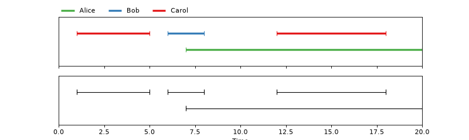

pyannote.core
pyannote.core is an open-source Python library providing advanced data structures for handling temporal segments with attached labels.
(Source code, png, hires.png, pdf)



It is the foundation of the pyannote ecosystem, made of a (growing) number of libraries ( pyannote.parser, pyannote.metrics, pyannote.database, pyannote.audio, pyannote.video).
It also provides a convenient way to visualize this temporal data in IPython notebooks.
Installation
$ conda create -n pyannote python=3.5 anaconda
$ source activate pyannote
$ pip install pyannote.core